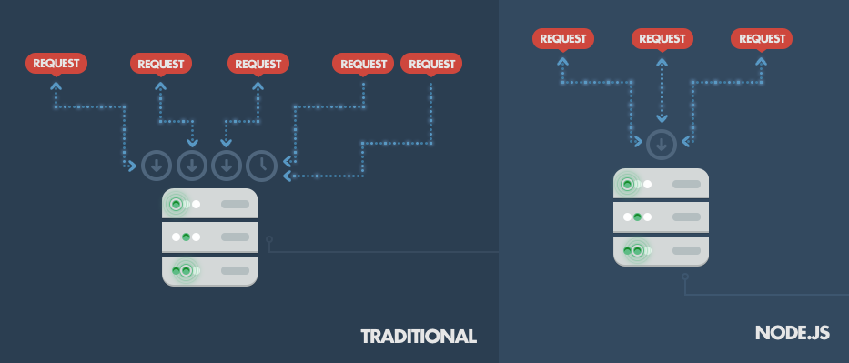
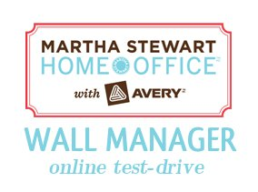

angular.js
<front-end framework>

Speed - Node, as opposed to apache, delivers content asynchronously, meaning it can deliver content simultaneously whether or not another process is waiting. This speeds up response times tenfold, and allows for much more complex applications. Here's an example of how it works:
Since Node doesn't have to spin up a new instance every time a request is made, it uses drastically less memory, and can handle thousands more requests at a time.
Maintainability - Node + Angular separates the concerns of developers, allowing for easier readable and maintanable code. Everything is Javascript - With Node, there is no need for a "front-end" and a "server-side" developer. Simply hire one developer who can work with the full stack! Open-source & Community-driven - Node + Angular are supported by legions of enthusiasts, with forums, wikis, how-tos and documentation litering the interwebs.Estee Lauder - Architected and maintained the Beauty of Night campaign website. Build in jQuery.
Martha Stewart Wall Organizer - The Wall configurator is an online test-run of the Wall Organizer product sold at Staples. Build in jQuery and jQuery UI.
Adobe Analytics Assessment - A tool for assessing the value of your web analytics solution. Build in jQuery and jQuery Mobile. Being rebuilt currently in Angular.

An engineer who thrives on innovative design, clean and simple layouts, and creative responsive code.
Self-motivated professional with over 4 years of web development and programming experience. In-depth understanding of web standards, accessibility, and semantic markup. Passionate about efficient and concise workflows.
Seeking a team-oriented environment utilizing and building upon my skills in web development, mobile frameworks, and programming.